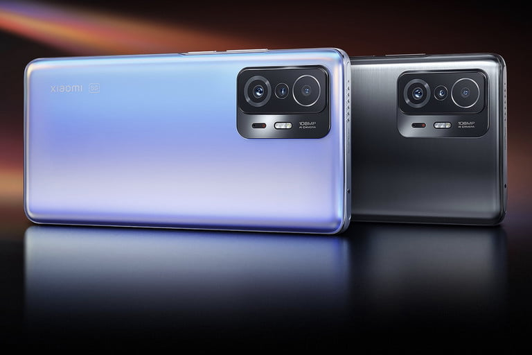
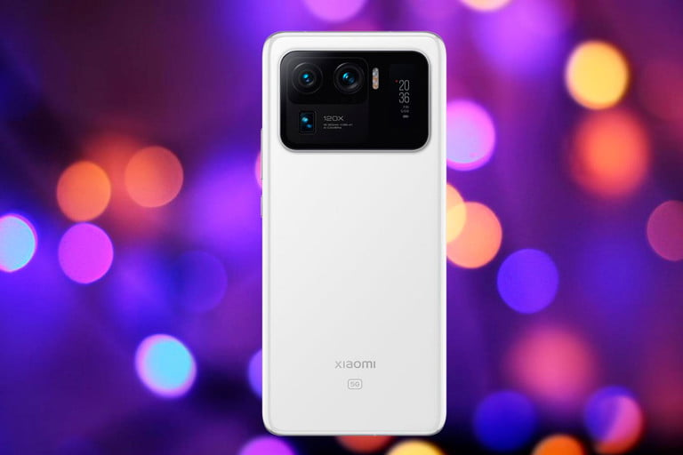
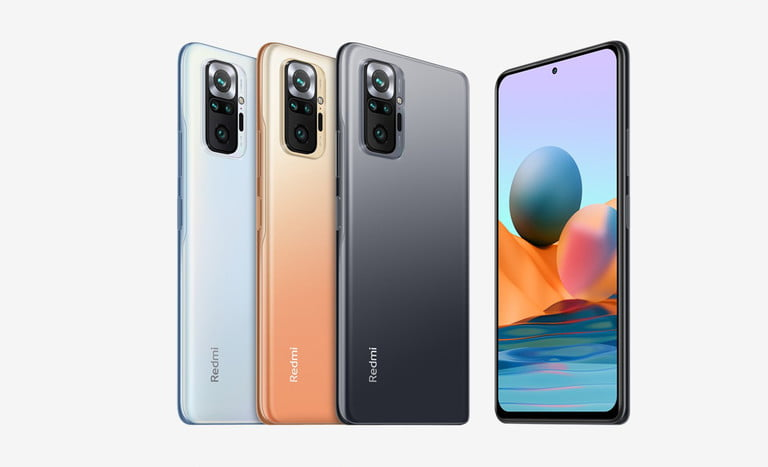
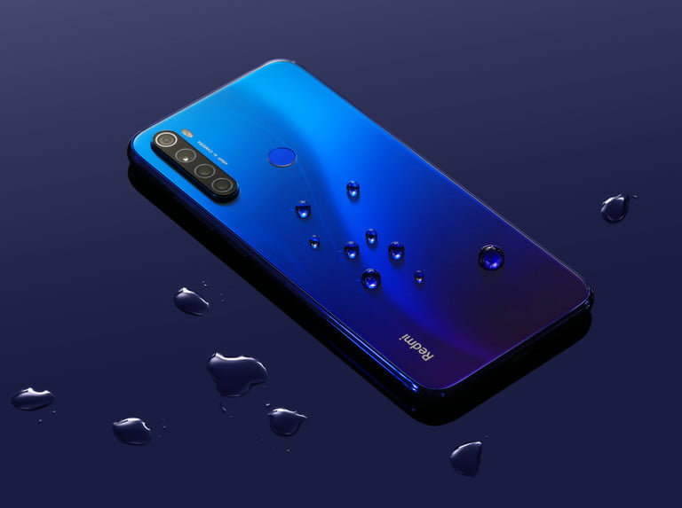
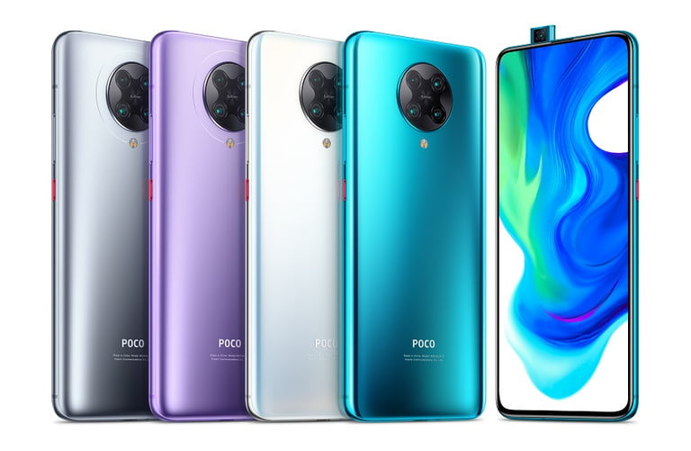
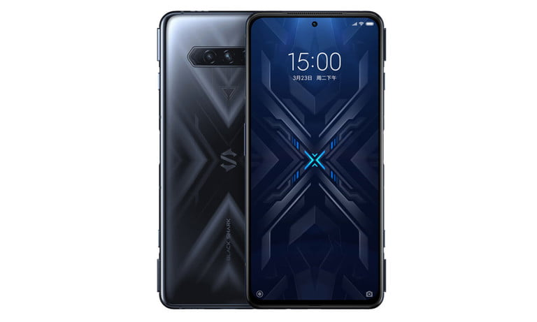

Xiaomi 11T Pro
Xiaomi ha puesto aquí un procesador Snapdragon 888 de Qualcomm,
así como 8 GB de RAM y 128 o 256 GB de almacenamiento interno.
Su batería es de doble celda con 5,000 mAh, con una carga rápida
más potente que la del 11T. Hablamos de 120 watts que, según la marca,
en condiciones especiales (el teléfono apagado) es capaz de cargar 42
por ciento en 5 minutos y alcanzar una carga completa en solo 17 minutos.
|

Xiaomi Mi 11 Ultra
Para los que quieren “poder” en toda la extensión de la palabra,
el Xiaomi Mi 11 Ultra es de lo mejor que van a encontrar por varias razones:
procesador Snapdragon 888, compatibilidad con 5G SA y NSA, Bluetooth 5.2, Wi-Fi 6 y
batería de 5,000 mAh con carga rápida de 67 watts (alámbrica e inalámbrica).
Para ejecutar y guardar cualquier aplicación, el móvil incluye RAM de 12 GB y
almacenamiento de 256 GB (no ampliable). Respecto al apartado multimedia,
viene con una pantalla AMOLED de 6.81 pulgadas (resolución WQHD+) y con tasa
de actualización de 120 Hz, además de protección Corning Gorilla Glass Victus.
|

Redmi Note 10 Pro
La firma china presume de este celular su “sistema de imagen distintivo,
supernítido y alucinante”, pues se trata de una óptica principal con cámara
gran angular de 108, ultra gran angular de 8, telemacro de 5 y sensor de
profundidad de 2 megapixeles. La pantalla es una AMOLED de 6.67 pulgadas
con resolución Full HD+ (2,400 x 1,080 pixeles) y con tasa de refresco de 120 Hz
(actualiza su imagen 120 veces en un segundo). En cuanto a procesamiento,
incluye el chip Snapdragon 732G y la máxima configuración de 8 GB en RAM y
128 GB de almacenamiento, por lo que no habrá problema a la hora de ejecutar
cualquier aplicación.
Para no quedarse a medio camino, la batería de este integrante
de la serie Redmi es de 5,020 mAh; la carga rápida es de 33 watts
|

Redmi Note 8 2021
Algo interesante debe tener este celular para que Xiaomi traiga una edición 2021,
la cual cuenta con un interior renovado: procesador MediaTek Helio G85 de ocho núcleos,
batería de 4,000 mAh con carga rápida de 18 watts y 4 GB de memoria RAM. Ello significa
que el smartphone dará una buena respuesta en la mayor parte de las tareas.
Con el propósito de disfrutar de todo tipo de contenido multimedia, la unidad cuenta con
una pantalla Full HD+ de 6.3 pulgadas (brillo de 500 nits), en tanto que su óptica trasera
es cuádruple, con un sensor principal de 48 megapixeles.
Otros de sus elementos son cámara delantera de 13 megapixeles, carga rápida de 18 watts,
sensor de huellas en la espalda y conector para auriculares de 3.5 mm. Está disponible en negro, azul y blanco.
|

Poco F2 Pro
¿Listo para asumir cualquier tarea? Sí, parece que esa es la misión del Poco F2 Pro,
y para cumplirla cuenta con aliados como el procesador Snapdragon 865, batería de 4,700 mAh,
display de 6.67 pulgadas con resolución Full HD+ y compatible con HDR10+, y
configuración máxima de 8 GB en RAM y 256 GB de almacenamiento.
Su apartado óptico está compuesto por una cámara principal de 64 (sensor Sony IMX686),
ultra gran angular de 13, telemacro de 5 y sensor de profundidad de 2 megapixeles.
La cámara para selfies es de 20 megapixeles y retráctil, lo que hace que la pantalla abarque casi todo el frente.
|

Black Shark 4 Pro
La “bestia” de Xiaomi para los gamers cuenta con una pantalla de 6.67 pulgadas —resolución Full HD+
y tasa de refresco de 144 Hz—, procesador Snapdragon 888 y la impresionante carga rápida de 120
watts para una batería de 4,500 mAh. Ello significa tener el smartphone listo en alrededor de 15 minutos.
La óptica trasera está compuesta por tres lentes, el sensor principal es de 64 megapixeles.
En tanto que los gatillos físicos “aparecen” cuando el usuario quiere jugar.
Respecto a la configuración base del Black Shark 4 Pro, es de 8 GB de RAM y 256 GB de
almacenamiento.Ya en más territorios, luego de que se conoció en China el pasado marzo,
las expectativas son altas con este equipo.
|